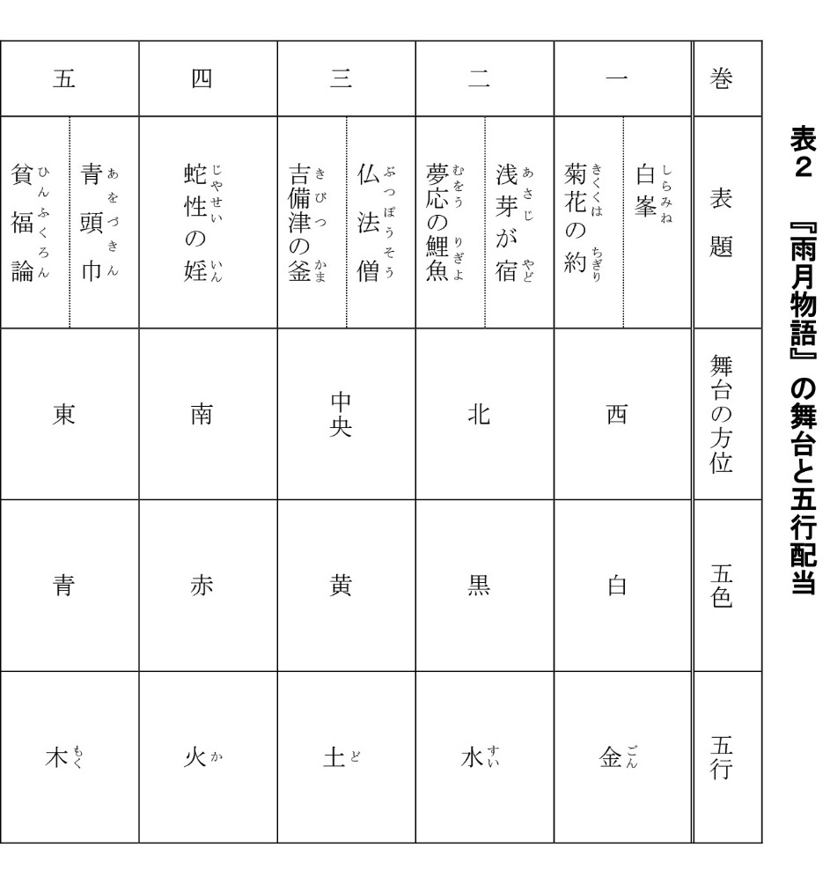
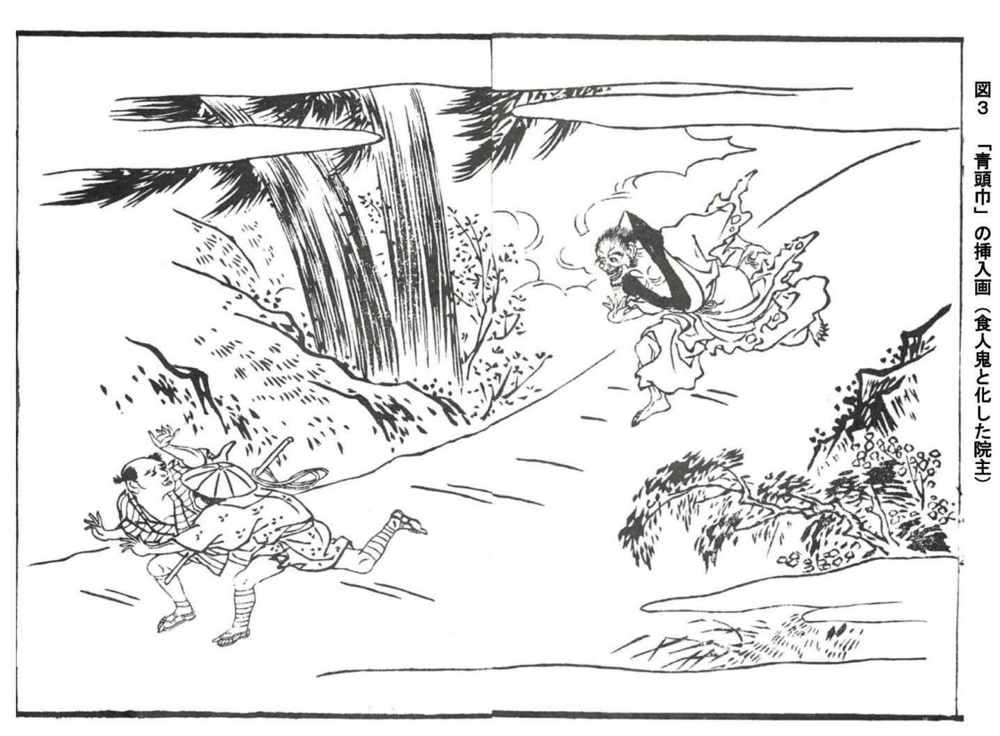
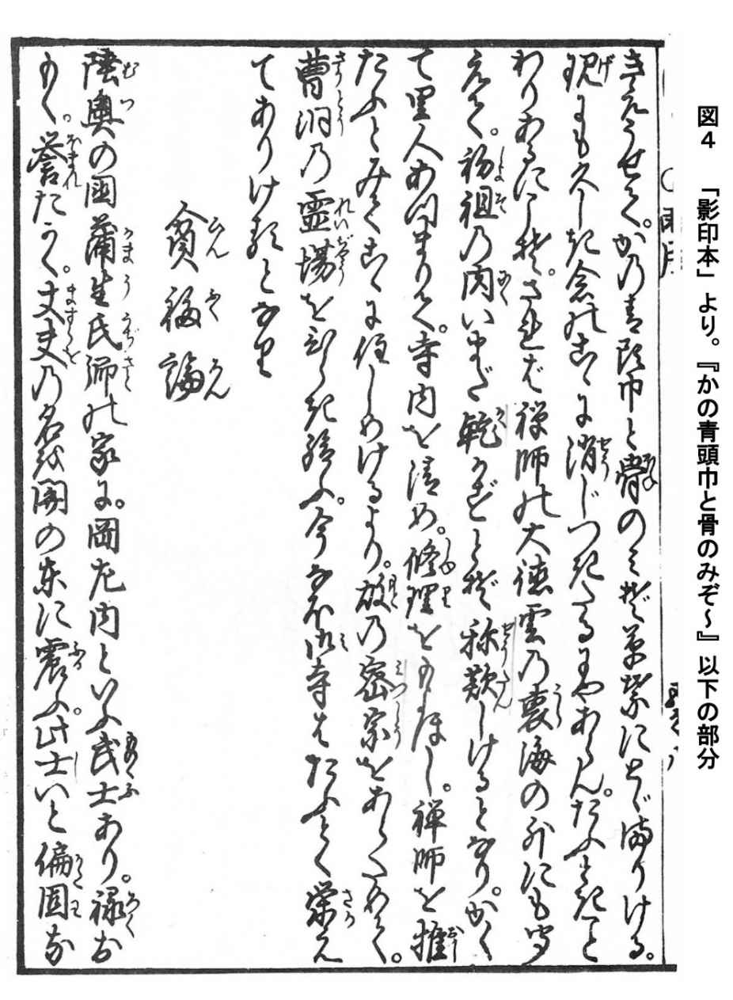
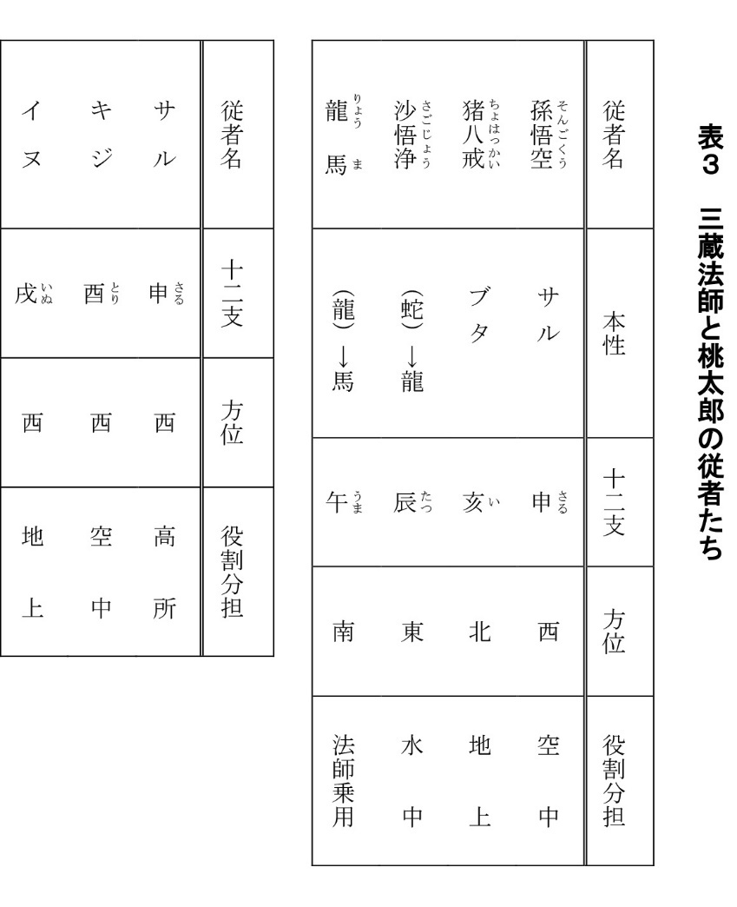

| 「青頭巾」とは何か 第二版 私見『雨月物語』論 | |
| 齋藤 吉勝 | |
| (2016) | |
「 青頭巾」とは何か 第二版
――「青」と「頭巾」の象徴についての覚え書き――
齋藤 吉勝
はじめに
上 田 秋 成 の 『 雨月 物語』巻之五に収められる 「 青 頭巾 」は、実 に 後世 の読者 を 悩 ませ る 魅 力的 な 一篇 となっている。たとえば、鬼 と 化 し た 下野 の国（現在の栃木県）の山の僧が 、 最期 は 快 庵 禅師 が 被 せた「青頭巾」と 「 証 道 の歌の二句」によっ て 遷化 したのか、という最大の問題があって、これについて は 管見 の及ぶところ有力な定説はなく 、 本篇 を 扱 う論文もまた少ないように見受けられる。
そこで、かつて筆者は 「 陰陽 五行 と『雨月物語』」な る 拙論 （１） を母校の立正大学國語國文学会誌 に 掲載 したが、そこでは『雨月物語』 に 投影 されると思考する陰陽五行思想を、全九篇にわけ て 概説 した（表１・表２・図１・図２・図３を参照）。そして、問題の「青頭巾」においては、五行思想の 「 木 気 」から解釈して巻之五を 「 木 之巻」 と 捉 え、五行 ・ 九星 の 象 意 と の 共通 項 を 箇条書 きふう に 記 したのである。しかるにその後、『雨月物語』のある大学の研究者から、特に「青頭巾」について の 見解 は興味深い、もっ と 鋭 く 論述 してほしい、との要望をいただいたので、筆者はその後数年新資料を も 探索 し 、 熟察 してきた 。 本稿 ではその結果を 、 改 めて提出しようとするものである。
さて、「青頭巾」という怪異・名短篇について、これまで筆者 を 魅了 し、数十 年 悩 ませ続け た 謎 は、要約すれば次の二点 に 尽 きる（太字・筆者）。
一 「青頭巾」の「青」とは一体何を意味するのか。なぜ頭巾の色は「青」でなければな
らなかったのか。
二 「青頭巾」の「頭巾」とは何 を 象徴 し、物語上いかなる役割 を 果 たしているのか。
以下、本稿では右の順序 に 従 って以前の拙論と の 重複 もあるが、新た な 知見 およ び 私見 を可能なかぎり客観的 に 深化 させなが ら 論述 していきたい。


一 「青頭巾」の「青」について
第一に、実 に 素朴 で 率直 な疑問から論を展開してみたい。
『雨月物語』巻之五の第八篇「青頭巾」は、全体的なストーリーは理解できるものの、はたして表題の「青頭巾」の「青」とは一体何を意味するのであろうか 。 換言 すれば、頭巾の「青」はなぜ白・黒・赤・黄など の 他 の色で は 不都合 であったのか、という疑問である。
表題の「青頭巾」の「青」は 、 篇中 の初め 「 紺 染 の巾」と表現される。ところが篇の後半、一年 を 経 て も 未 だ に 鬼 僧 が 「 証 道 歌 二句」 を 唱 えているのを 、 快 庵 が見かね て 禅杖 で 一喝 して鬼僧の頭を打ちおろすと、 「 忽 ち 氷 の朝日にあふがごとくきえうせて、 かの青頭巾 と 骨 のみぞ草葉にとどまりける」（太字・筆者） （２） と表現されるのである。一年後に紺染の頭巾が「青」に変色していたことにも秋成の細かい芸を感じるが、ここで重要なことは 、 五行 思想でいう「青」（五色）は、 「 木 気 」 に 該当 する色だということである。その「木気」の重要 な 配当 を簡単 に 記 せば、「東」 「 震 ・ 巽 」 「 寅 ・ 卯 ・ 辰 」（今の午前四時～午前八時ごろ。）「春」「一・二・三月（旧暦）」 「 仁 」 「 貌 」などである （３） 。ゆえに舞台は「下野の国」（当時の秋成が住む大坂から見てはるか東国。）なのであり 、 阿闍 梨 が鬼となったの は 十二支 の東北 「 丑 ・ 寅 」 （ 鬼門 ） や 八卦 の 「 震 ・ 巽 」（雷・風を象徴す る 俵屋宗 達 の 「 風神雷神図屛風 」の鬼型図が有名。）と「東」に関係するのである。また、阿闍梨が鬼 と 化 したのは、「十二三歳な る 童児 を（中略）ふか く 愛 させたまう」ゆえ （ 愛欲 ・ 男色 ＝ここでは「変態性欲」ではあるが 、 究極 の「仁」と解してもよい と 愚考 する。）であって 、 巻末 で「影のやうなる人」（五事の 「 貌 」の反映か。）が 「 忽 ち 氷 の朝日にあふがごとくきえうせ」たのは、木気 の 時候 が「寅・卯・辰」「春」「一・二・三月」と関係するからであろう。
筆者はこれら の 事柄 について長 年 考察 し続けているが 、 近世 当時までの思 想 潮流 であった五行思想 の 観点 でなければ、作者 が 創作 し た 意図 やストーリーの細かい骨組み の 配慮 は、現代の『雨月物語』の読者には理解できないのではないか、と考えているのである。また、作者秋成 も 執筆 当時 は 並外 れた読書家 で 医師 でもあり 、 和漢 の古典はもとより 、 儒学 （中国語）や五行思想の知識 も 相当 なものだったことは言うまでもあるまい。以上のような理由から、頭巾の色 は 当然 五行思想の「木気」 の 配当 である「青」でなければならず、理論上 、 他 の色では『雨月物語』「青頭巾」の「青」 の 必然性 は 全 く 生 じないわけである。
本論に入る。頭巾の「青」とは何を象徴するのか、という問題である。結論を急がず、テキストを見てみよう。テキストには「氷の朝日」 の 後 に、次のような一文が続く。すなわち、 「 現 にも久しき念のここ に 消 じつきたるにやあらん」である。
浅野三 平 訳 では、「本当に長い思いがここに消えつきてしまったのであろう」 （４） という 「 推定 」になっている。また、高 田 衛 訳でも「まことに長い間の執念が、やっとここで消え尽くしたのであろう」 （５） と同じような解釈である。ところが石 川 淳 訳では、「げにも久しい執念のここに消えつくしたのであろうか」 （６） という「疑問」 の 意 に 解 する。また 、 円 地文子 訳でも「まことにひさしいあいだの執念がこの一喝に消えつきたのであろうか」 （７） と、同じく「疑問」の意となっている。
おそらくこの部分は 、 係 助詞の「や」と文末の推量の助動詞「らむ（ん）」との判断で悩むところだろうが、筆者としては石川・円地両氏の「疑問」型 に 従 いたいのである。なぜなら、五行説で「木気」の色は「青」（あるいは 「 紺 」） に 該当 するのであり、その象徴するところは、まぎれもなく 《 死 か ら 生 へ 蘇 る色》、すなわち 「 再生 」 を 暗示 するからである 。 先 ほど、木気の配当に「東」「寅・卯・辰」「春」「一・二・三月」 を 挙 げたが、これら は 皆 、太陽 が 昇 る方角・時間・季節などであって、陰陽でいうなら 「 陽気 の初め」、生命でいうなら 「 生気 の初め」ということになる。
むか し 瀕死 の人に「紺染め の 手拭 い」 を 額 に巻い て 快癒 を 祈 ったのには、おそらくそういっ た 呪術的 な意味合いがあったからである。そして何よりも、日本の天皇の象徴する色は「紫」（青＋赤）の 「 陽気 」なのだ。決して、葬式時に着用するような「白」や「黒」の 「 陰気 」 を 公 のめでた い 儀式 （呪術も含めて）において身にまとうことはないのである。
しかしながら、この点に関しては 、 元田與 市 氏が相当考え抜いた論考を我々に提示している。一部分 を 抜粋 して紹介しておこう。
これにたいして「青頭巾」の「現にも久しき念のこゝに消じつきたるに や あら ん 」とする叙述では、二重傍線で示したとおり「や‐ん（む）」という〈疑問・反語〉の係結びが用いられているが、諸注釈にみえるとおり〈疑問〉にとるのが一般的である。それも当然のことであって、反対に〈反語〉にとった場合、調伏を完全に否定してしまうことになって、仏の道理を讃える後続文との接続のうえから文意が通らなくなるからだ。ただし、〈疑問〉にとった場合でも、調伏が完了したことが明示されるわけではけっしてない。あくまでも疑問文でしかなく、後続文との繋がりはスムーズにみえながら、なにかしら不全感をのこしてもいる （８） 。
と、このように元田氏は「なぜ調伏完了はぼかされているのか」と疑問を明確にし、それ
はまたこの作品が「シニシズム」（筆者注・冷笑主義） に 繋 がっているからではないか、と
いう予測を我々 に 示唆 している。
ところで、氏の疑問はもっともだが、わたしの「青頭巾」の読み解きは少し氏と は 異 なっ
ている。それは、係助詞「や」は〈疑問〉にも〈反語〉にも用いられるので、ここは〈反語〉
の可能性を も 視座 に入れた立場も取るべきだ、というものである。すなわち、「誠に長い間
の執念がここに消滅したのであろうか、いや消え た 訳 ではない。鬼僧はまたきっとどこかで
蘇る可能性がある」、という「人間の執念の不可思議さ」を強調していると思われるのであ
る。秋成は実にこの場面で、我々読者に「青頭巾」という《あいまい な 公案 . 》を投 げ 掛 けて
いる、と見るべきであろう。
しかしながら、快庵は、鬼僧と化した阿闍梨が言った言葉、「師はまことに仏なり。かく浅まし き 悪業 を 頓 にわするべきことわり を 教 給え」 （９） とい う 懇願 を受け入れたからこそ、 「 本源 の心」へ帰らせようとして、「紺染の巾」と「証道の歌の二句」を鬼僧 に 授 けたのであった。つまり鬼僧が「再生（蘇り）」 を 希求 したがゆえに、快庵 は 自 ら 被 っていた「青頭巾」 を 提供 したのである。ところが一年後、鬼僧は「影のやうなる人」として証道歌二句 を 未 だ に 唱 え続けていた......。ここに快庵の 「 教化 」と「本源の心」に帰らせようとする指導 は 破綻 を 来 した、つまりは「失敗」したのであり、鬼僧もまた最後ま で 執着 か ら 抜 けきれなかっ た 哀 れな主人公の姿 を 露呈 した、とみるのである。
以下 、 周知 の問題 に 触 れる。この篇で、鬼僧 は 遷化 したのか、という問題である。原文には次のようにある。「かの青頭巾 と 骨 のみぞ草葉にとどまりける 。 現 にも久しき念のここ に 消 じつきたるにやあらん。たふときことわりあるにこそ。」 （ 10 ） という文章である（図４参照）。実 に 不 気味 である。これは、鬼僧は骨 と 化 した（＝死？）が、「青」は先述した通り「再

生」を象徴する色ゆえに、ま た 何時 ぞ や 何処 かで死肉 を 貪 り始めるのではないか、とい う 暗示 を読者に印象付けているのではないかとみるのである。さらに、「たふときことわり」も同じく係助詞「こそ」の〈強意型〉で、係りの下に来るべき結びが省略されている、いわゆる《結びの省略》といわれるものが見られるのである。一般の古文の参考書 （ 11 ） によると、「......に＋係り。」の時には、下に「あり・あらむ」 を 補 って訳すとあるから、「たふときことわりあ る に こそ 。」→ 「 に こそ ｟あれ｠」というようにラ変「あり」の 「 已然形 」 を 補 う、という少しややこしい文になるようである。訳は「ここに誠 に 尊 い仏教の道理があるのである。」とするのが基本型だが、訳者によっ て 一様 ではない。ちなみに、筆者・齋藤の訳は、「尊い仏教の道理は本当にここにはあるのか、ないのか。」（道理がない可能性もありうる）と、わたし は 皮肉的 に今のとこ ろ 解 している。
それゆえ、今ま で 雲水 の身であった快庵禅師が、最後に、この篇の舞台 ・ 大中寺 に曹洞の霊場を開いたという結末部分に結び付くのである。森山重雄は「真言密教と曹洞禅との宗教的対立葛藤を想定してみることも可能であって」と解釈している （ 12 ） 。しかし筆者・齋藤には、森山氏の宗教的対立説も理解できるが、それよりも先に、快庵による鬼僧への 「 魂鎮 め」の必要性が大きかったせいではないか、と思えてならないのである。なぜなら、鬼僧 の 最期 で、草葉にとどまった「青頭巾」の「青」は「再生」を象徴する色ゆえに、この場面で は 再 び鬼僧のような 「 猟奇的 な人間」の再出現 を 封 じ 込 め、時代的にも風俗・民俗的に も 鎮魂 をはかる必然性が大いにあった、と思われるからである（なお、このことは、 「 白 峯 」 の 崇 徳院 と共に、近世当時までの 「 御霊 信仰」のあり方にも関わる大きな問題である）。
さらに「五 行 相剋 」の関係で言えば、「青頭巾」は 「 金剋 木 」の理にかなった短篇である。つまり 、 薩摩 の国出身の快庵禅師は「金気」を帯び た 雲水 であり、下野の鬼僧は東国なので「木気」ということになる。「青頭巾」は、「西（五行で金気）の僧侶が東国の鬼僧（五行で木気）に勝つ話」 と 解 せられる。
二 「頭巾」が象徴するもの
第二に、「青頭巾」の「頭巾」が象徴するものについて 、 若干 考察してみたい 。 先行 の研究書によれば、表題の「青頭巾」とは「僧侶のかぶる紺色の頭巾」 （ 13 ） とのみなっており、筆者 が 執拗 なまでに興味 を 抱 く「頭巾」が象徴するものについて は 一切 触 れられていないの が 実状 である。
ところが 、 閻 小妹 によって、篇中に登場する重要な語句「 心 放 せ ば 妖魔 となり 、 収 む る 則 は 仏果 を得る」 （ 14 ） という考え方は、閻氏論文「『西遊記』と秋成の文業」なる論考 （ 15 ） によって、『西遊記』がこの語句の直接の典拠なり、との判断が示されたのである。すなわち、前出の注（２）の文献によれば、「秋成 は 虞集 の『西遊記原序』（『通俗西遊記』宝暦八年・一七五八年刊）によって、この語を作ったと思われる。」としているのである （ 16 ） 。
なるほど、このことは実に興味深いし、筆者に も 異論 はない。なぜなら、筆者も学生時代（一九八五年ころ）、『西遊記』と「青頭巾」の比較論文を卒論 で 扱 おうとしてい た 時期 があったからである。今、この二つの小説 の 共通 項 を 全 て紹介す る 余裕 はないが、ここでは「青頭巾」の「頭巾」とは一体何を象徴するのか、につい て 焦点 を 置 いているので、この一点 に 着目 して論を進めたい。
『通俗西遊記』は、口木山人（西 田 維則 ）の訳本である。『日本古典文学大事典』の土屋順子氏の解説によれば、「中国白話小説を翻案した通俗物の一種。五編三一巻三四冊。明の呉承恩作の『西遊記』を翻案したもの」とある （ 17 ） 。なお刊行年は、（２）の「作者対照略年譜」の資料によれば、宝暦八年（一七五八）、秋成二十五歳の時で、『雨月』刊行より十八年前の作品である。
ところで、『西遊記』は五行思想と深い関わりがある、という中野美代子の説があるが （ 18 ） 、特に本書中の「４ 旅人の従者たち――桃太郎から『西遊記』まで」 （ 19 ） は 、 論 が 明快 で 圧巻 である。中野氏はまず吉 野 裕子 の桃太郎の従者たちの謎を紹介した上で 、 孫悟空 たちの役割分担 を 判 りやすく論じている。そして「三蔵法師と桃太郎の従者たち」の論理性を、「三蔵法師の従者たちは、その役割分担といい、十二支による方位配当といい、まことに整然と論理化されているように思われる。」と主張 （ 20 ） 。最後に結論を「表」で示し、みごとに我々読者 を 納得 させているのである（表３参照）。

さて、ここで筆者 が 述 べたいのは、『雨月物語』と『西遊記』と の 因果 関係である。『雨月物語』と陰陽五行との密接な関係については 、 先 の筆者の拙論（１）で全体的に述べたつもりだが、今ここで、鬼僧 に 被 せられた「頭巾」のみ に 絞 って主張すれば、秋成は『通俗西遊記』をも「青頭巾」の典拠にしていたのだから、「紺染の巾」は鬼僧にとってさながら孫悟空の例の「金 を 嵌 めた頭巾」 （ 21 ） と同質のもの と 捉 えることも可能であって、「 心 放 せ ば 妖 魔 と」ならぬよう仕掛けられた重要な小道具でもあったのではないか、と推測されるのである。すなわち、「鬼僧」＝「孫悟空」、「頭巾」＝「金を嵌めた頭巾」という図式がここでは成り立つのではないか 。 死 肉 を 喰 らう に 至 った鬼僧は 、 天空 で 大 暴 れした孫悟空に見立てることもできるのではなかろうか。また、鬼僧を教化し本源の心に帰らしめんとする「頭巾」は、野性的な孫悟空の行動 を 制御 させる「金を嵌めた頭巾」によ く 似 ている。短篇と長篇の違いはあるが、「頭巾」も「金を嵌めた頭巾」も登場人物 の 禁忌 の行動をうまく制限し 、 共 に「人間的な振る舞い」へ と 帰納 させる力を持つのである。筆者・齋藤は「青頭巾」の「頭巾」が象徴するものは実はこの点 に 他 ならない、と、この場を借りて力説しておきたいのである。
また、その他のものとしては、快庵が与えた証道歌の二句と三蔵法師 が 唱 える呪文 ・ 定心
真言 も 近 似 しているし、快庵 の 禅杖 と悟空 の 如意 金 箍 棒 も同様である （ 22 ） 。いずれにせよ、我々読者は、秋成の「青頭巾」という怪異短篇を読むにあたって、『西遊記』という長篇小説を読 み 込 んでいなければ、その内容は深くは理解できないのではないか、 と 改 めて主張す る 次第 である。
おわりに
以上、結論を簡単に記せば、「青頭巾」の「青」は陰陽五行の「青」 （ 木 気 ） に 該当 する色で、それは「近世の《本歌取り》文学」ともいうべき多数 の 典拠 作品群 を 擁 しながら、さら に 二重奏 、 三重奏的 に様々 な 重層的 な意味をも加え、物語中でも「再生（蘇り）」を象徴する、と思われる。と同時に重要なことは、「青頭巾」という短篇は五 行 相剋 の関係 「 金剋 木 」で、西国出身（金気）の僧侶・快庵禅師が東国（木気）の鬼僧に勝つ話、として も 捉 えられる。また「頭巾」については、『西遊記』のヒーロー・孫悟空の「金を嵌めた頭巾」 に 相通 じ、「人間的な振る舞い」へ と 帰納 させる力を持つ重要な小道具であった、ということにもなる。
なお、今回の「青頭巾」論に関しては 、 私見 が多いものの、なるべく秋成が生きた近世時の読みにさかのぼっ た 見解 に近づいたつもりである。筆者の今後の『雨月物語』研究としては、本論で考察した論を深めて、陰陽五行思想を中心とした、やはり近世という時代の思 想 潮流 や歴史観 に 沿 っ た 側面 をさら に 掘 り 下 げてみたい、と考えている。
諸先学 の、 ご 教示 を願う。
注
（１）『立正大学國語國文』第四六号、二〇〇七年、一二二頁以降を参照。現在、アマゾンキンドルにても発売中。
（２）『雨月物語』「青頭巾」の原文の引用は、中村幸彦 高田衛 中村博保校注・訳者『英草紙 西山物語 雨月物語 春雨物語』小学館、新編日本古典文学全集７８、一九九五年、三八八頁以降に拠った。なお、『雨月物語』全篇の校注・訳は、高田衛氏が担当している。
（３）陰陽五行思想の詳細は、吉 野 裕子 『陰陽五行と日本の民俗』人文書院、一九八三年、三二頁以降などや、永田久『暦と占いの科学』新潮社、一九八二年、一四八頁などを参照。
（４）浅野三平校注『雨月物語 癇癖談』新潮社、新潮日本古典集成（第二二回）、一九七九年、一四四頁より引用した。
（５）（２）の三九九頁から引用した。
（６）石川淳著『新釈雨月物語 新釈春雨物語』ちくま文庫、一九九一年、一二七頁より引用した。
（７）円地文子訳『現代語訳 雨月物語 春雨物語』河出文庫、二〇〇八年、一六三頁より引用した。
（８）元田與市「調伏という皮肉――「青頭巾」の焦点――」。『江戸文学８』一九九二年、ぺりかん社所収。九一～九二頁より引用した。
（９）（２）の三九七頁より引用した。
（ 10 ）（２）の三九九頁より引用した。
（ 11 ）中野博雄 中村菊一著『基礎からわかる古文』日栄社、一九七七年、二六～二七頁参
照。
（ 12 ）森山重雄「『青頭巾』新見」。『上田秋成の古典感覚』三一書房、一九九六年、二五〇
頁より引用した。
（ 13 ）（２）の三八七頁より引用した。
（ 14 ）（２）の三九三頁、三九四頁より引用した。
（ 15 ）『江戸文学９』、ぺりかん社、一九九二年、一一〇頁以降を参照。
（ 16 ）（２）の三九四頁より引用した。
（ 17 ）明治書院、一九九八年、八三二頁より引用した。
（ 18 ）中野美代子『西遊記の秘密――タオ と 煉丹術 のシンボリズム』福武書店、一九八四年を参照。同、岩波現代文庫１１００、二〇〇三年、七二頁を参照。
（ 19 ） （ 18 ）の五四頁以降を参照。
（ 20 ） （ 18 ）の七〇頁より引用した。
（ 21 ）中野美代子『西遊記 二 』岩波文庫、二〇〇五年、「第十四回」に登場。一五六頁参照。
（ 22 ） （ 2 1 ）の「第十四回」では、悟空が六人の盗賊を如意金箍棒の一撃で撃ち落とし、三蔵法師に叱られる場面があるが、これ以降も悟空の如意棒はその威力を発揮し、棒で撃ち落とされた妖怪たちはその一撃のもとで「骨」と化す場面が散見できる。このあたりの趣向も、秋成は「青頭巾」のラスト・シーンで応用したのではないだろうか。さらに、三蔵法師と悟空たちが新たな土地に入るたびに「化け物だ！」と言われ、土地の者たちが逃げ惑う姿も「青頭巾」のオープニングによく似ていることも指摘しておきたい。
（さいとう よしまさ・元宮城県公立中学校国語科教諭）